Как создать свой VPN?
Можете написать мне в telegram, и я помогу Вам.
-
Мы будем делать сеть под Happ. Для владельцев IOS можно использовать V2Box.
- Зарегистрируйтесь на https://dashboard.render.com/login любым способом
-
В Dashboard создайте новый Web Service
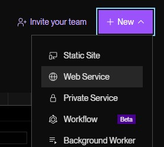
-
Выберите Public Git Repository, вставьте ссылку: https://github.com/AssA7778/REN
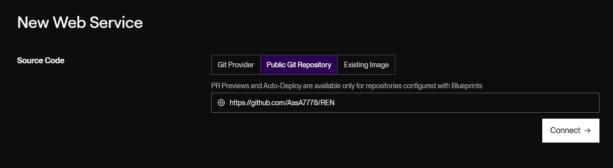
Нажмите Connect
-
В появившейся странице выберите нужный регион
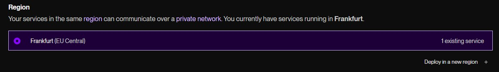
-
Выберите Free тариф
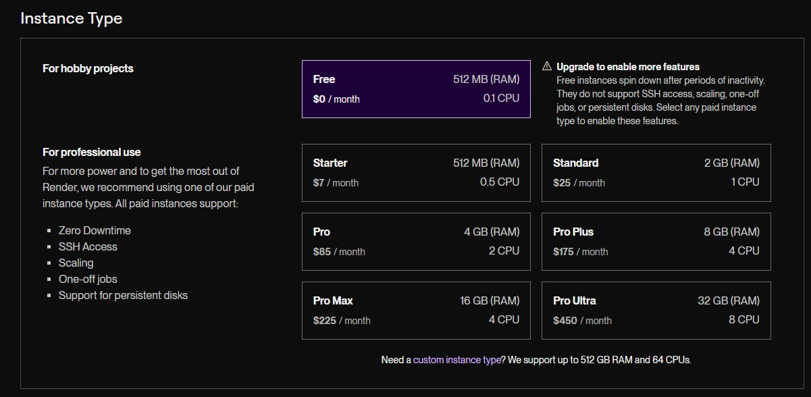
-
Если надо задать пароль администратора, в Enviroment Variables будет строка. В поле NAME_OF_VARIABLE пишем ADMIN_PASSWORD. В поле справа от этого пишем придуманный пароль.
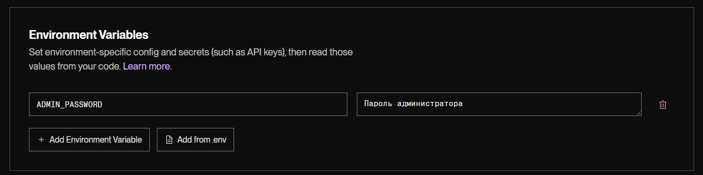
-
Нажмите Deploy New Service
-
В панели управления будет ссылка на сервис. Копируем её в браузер
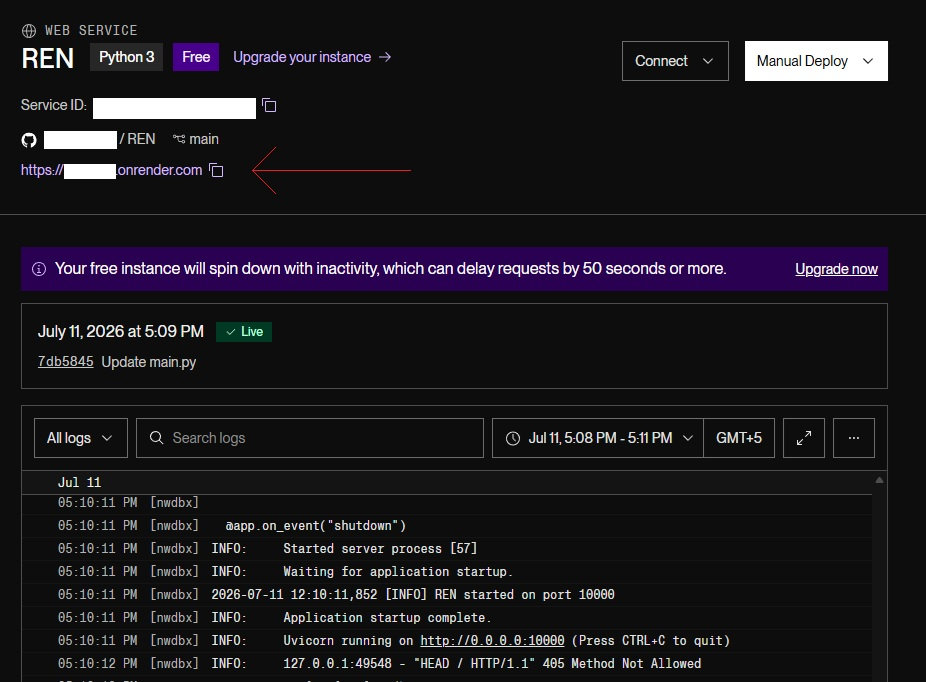
-
Дописываем /dashboard
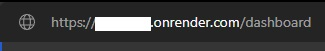
Потом надо будет вписать пароль администратора (или просто admin, если егоо не меняли)
-
В дешборде открываем вкладку Inbounds, нажимаем + Add
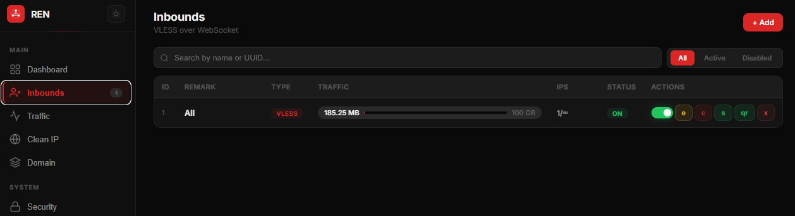
-
В окне вписываем имя сети и TRAFFIC LIMIT 100 (это лимит сервера, и мы даём ему понять этот лимит)
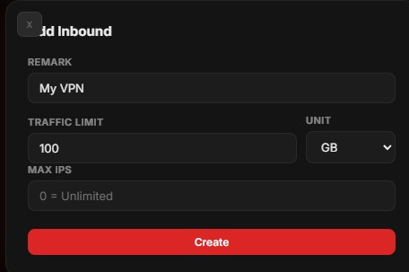
-
В появившейся строке справа нажимаем S
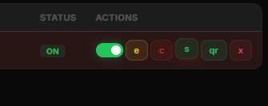
-
Теперь нужно открыть Happ, в меню нажимаем Add URL
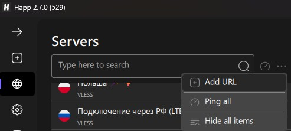
-
В Subscription Name пишем имя сети (любое удобное) и в Subscription URL вставляем ссылку, которая скопировалась в пункте 13.
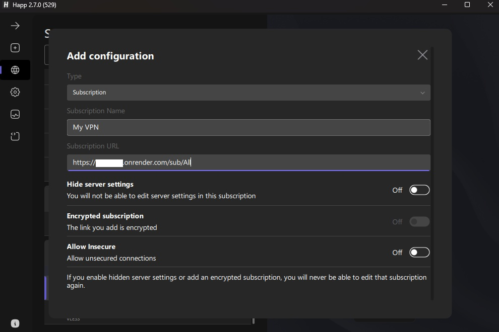
-
Пользуемся.
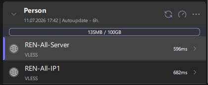
По поводу интерфейса, средняя из трёх кнопок - это пинг. Её можно нажимать, чтобы узнать работу сервера (если напротив нужной строки стоит n/a - сервер недоступен.)